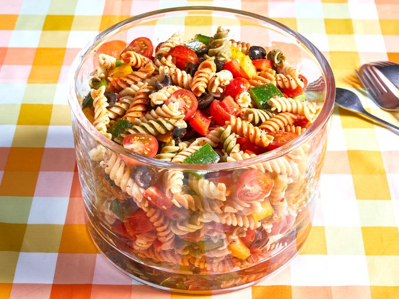

Pasta Salad

This pasta salad is nice and colorful, easy to make, and great for summer picnics or parties. The recipe was given to me by a dear friend many years ago, and I've been making it ever since!
Ingredients
- Pasta: This colorful, top-rated pasta salad starts with one pound of tri-colored spiral pasta.
- Dressing: Use a bottle of store-bought Italian-style dressing or, if you want to go the extra mile, make your own at home.
- Seasoning mix: Salad seasoning mix lends tons of savory flavor.
- Vegetables: You’ll need cherry tomatoes, three bell peppers (green, yellow, and red), and a can of black olives.
Home